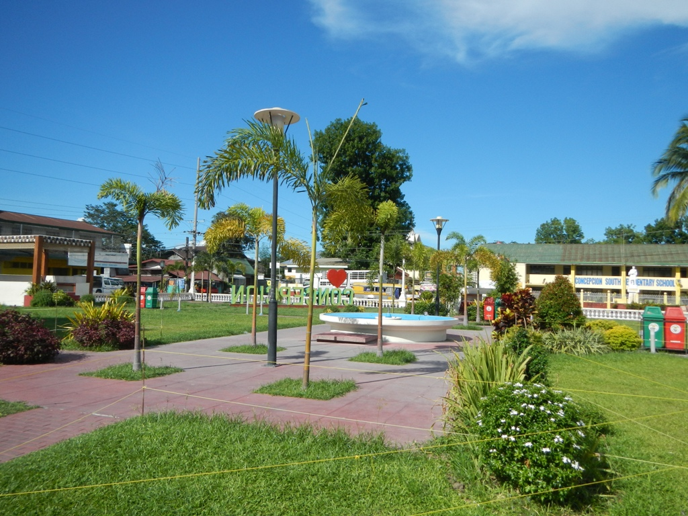
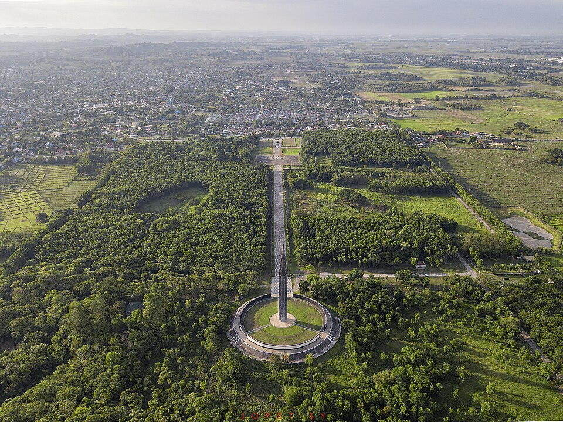
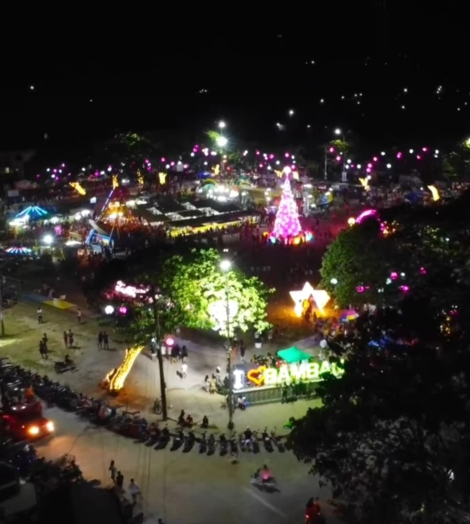

Parks & Recreation
Whether you're looking for a peaceful afternoon stroll or a fun day out with family, Tarlac's parks and recreational areas offer green spaces and outdoor activities for everyone.
- Tarlac City Recreational Park
-

Capas Eco-Park -

Bamban River Park
- Tarlac City Recreational Park: A popular urban park in the heart of Tarlac City with open lawns, walking paths, and shaded areas perfect for picnics and leisurely walks.
- Capas Eco-Park: A nature-oriented recreational area near the Pinatubo lahar zone offering camping, trekking, and immersion in Tarlac's unique post-eruption landscape.
- Bamban River Park: A family-friendly riverside park along the Bamban River where locals gather for weekend picnics, swimming, and outdoor recreation.